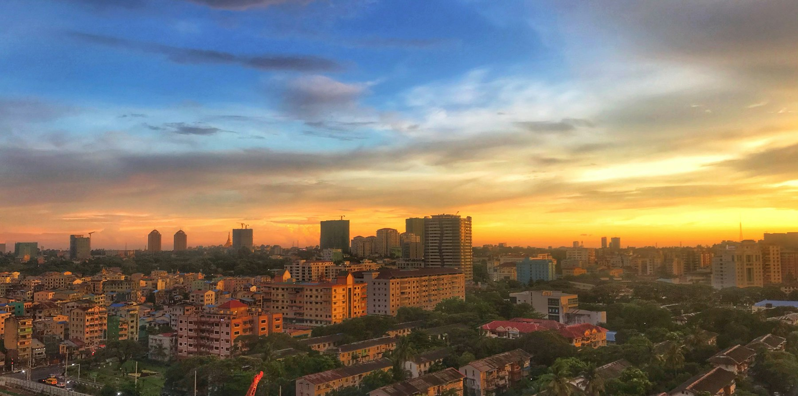

Desyners · Redesign
Seven complete versions of the site, each with its own 3D centrepiece and animation style. Services are shown as animated product mockups (always sharp), and every design now uses high-resolution Myanmar photos — pagodas, Bagan, Yangon streets, tea shops, markets and thanaka. Open each one and scroll all the way down — the switcher at the bottom of every page jumps between them.
A cinematic 3D product reveal, in Facebook blue.
Clean Facebook-blue, smart and techy.
Bright royal blue, playful and friendly.
Bright, premium, Apple-like.
Dark, glowing, futuristic AI.
Light, playful, friendly.

EBold, editorial, cinematic.
The current live site stays at desyners.io until you choose. Previews are English only — Burmese is added to the chosen design.